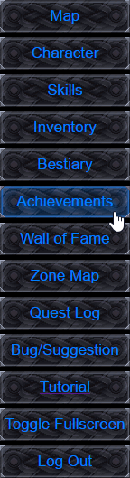
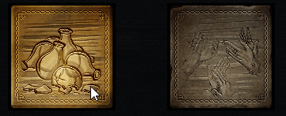

Achievements are unlocked as you progress in the game, and they can all be found on this page.. to see the requirements of an achievement simplly mouse over it and look in the information panel in the bottom right, if an achievement has been completed already, then it will show a timestamp of when it was obtained.